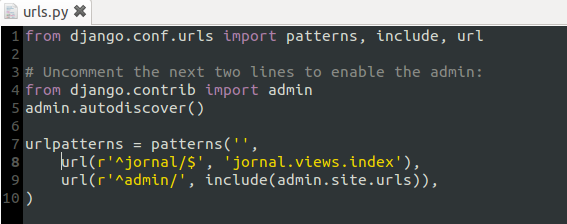
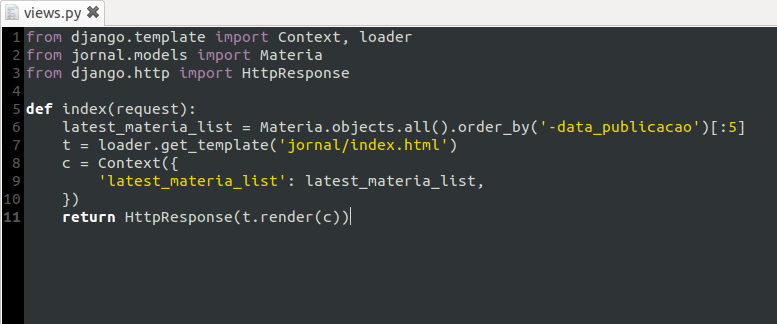
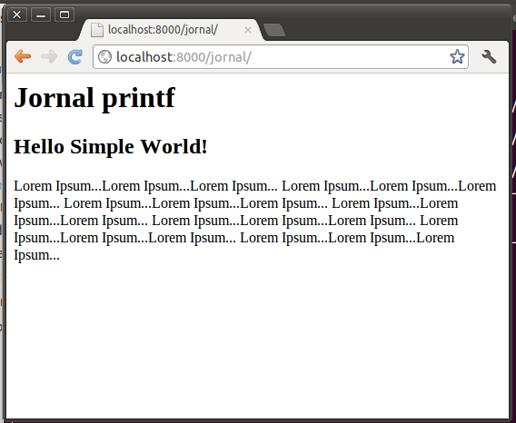

Resultado do Trabalho(){
Dicas
Começamos criando a URL para visualizar o post da matéria do tópico anterior. Para isso insira a linha abaixo no arquivo urls.py deixando como na foto :
- url(r'^jornal/$', 'jornal.views.index')

Volte para dentro da pasta jornal, e agora você deverá criar uma view para o jornal. Assim, crie um arquivo de nome views.py e insira o bloco de código mencionado abaixo lembrando da identação do python:

Nestas linhas de código você gerou uma view para a página de index. Este código gera uma lista de até cinco matérias que serão mostradas por ordem de data de publicação. Logo após, você tem a junção do código em python com o template.
Agora precisamos criar o template que irá rodar a view. Para isso crie uma pasta chamada templates e dentro dela uma outra pasta chamada jornal. Dentro desta última adicione um arquivo html, index.html, e insira o bloco a seguir:
Esse html é responsável por pegar todas as materias da lista de Materias construida no módulo views.py, mostrando o título e conteúdo de cada uma.
Para finalizar, execute novamente aquele arquivo srv_run.bat ou srv_run.sh, para reiniciar o servidor.
(Aos usuários linux, se caso ainda não funcione, finalize o processo digitando via terminal, killall python, e clique novamente em srv_run.sh.)
Resultado:

Referências
}